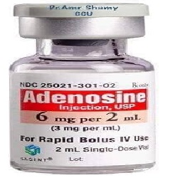

Adenosine

Adenosine ဆိုတာဘာလဲ
- Adenosine ဆိုတာ လူသားတို့၏ခန္တာကိုယ်ထဲရှိ ဆဲလ်များတွင်ပါဝင်သော ဓာတုပစ္စည်းတစ်မျိုး ဖြစ်ပါသည်။
- သွေးကြောကိုကျယ်စေကာ သွေးခုန်နှုန်းကိုထိန်းညှိပေးနိုင်သည့် အာနိသင်ရှိပါသည်။
- ကင်ဆာရောဂါသည်များတွင် စွမ်းအင်ဖျက်ဆီးသော ဇီဝဖြစ်စဉ်ပြောင်းလဲမှုကို တားဆီးခြင်းဖြင့် ကိုယ်အလေးချိန် အလွန်အမင်းကျဆင်းမှုကို ကာကွယ်ပေးပါတယ်။
- Adenocard, Adenoscan အစရှိသောနာမည်များနှင့် ဆေးများဖြင့် ဈေးကွက်ထဲတွင် တွေ့ရသည်။
ဘယ်နေရာတွေမှာ သုံးလဲ
- နှလုံးခုန်နှုန်း ပုံမှန်မဟုတ်သည့် ရောဂါများတွင် အကြောဆေး အဖြစ်သုံးပါတယ်။
- Adenosine (Adenosine Triphosphate) အကြောဆေးဟာ ခံတွင်းတက်စေခြင်း၊ အစားစားချင်စိတ်ကို လှုံဆော်နိုင်ခြင်းများကြောင့် ကင်ဆာရောဂါသည်များတွင် ကိုယ်အလေးချိန်အလွန်အမင်း ကျဆင်းမှုကို ကုသရန်သုံးပါတယ်။
- သွေးလည်ပတ်မှုမကောင်း၍ ဖြစ်တတ်သော အနာများတွင်လည်း အသားဆေးပုံစံဖြင့် အသုံးပြုလေ့ရှိပါတယ်။ ရေယုန်နှင့် အချို့သောနာကျင်ကိုက်ခဲခြင်းများတွင်လည်း သုံးလေ့ရှိပါတယ်။
ဆေးရဲ့ဆိုးကျိုးဘာတွေလဲ
- Adenosine အားဆရာဝန်၏ တိကျသော ညွှန်ကြားမှုအောက်တွင် ထိုးဆေးအဖြစ်သုံးလျှင် ဘေးထွက်ဆိုးကျိုးနည်းတာကို တွေ့ရှိရပါတယ်။ သို့သော် ခေါင်းမူးခြင်း၊ ရင်တုန်ခြင်း၊ သွေးပေါင်ကျခြင်း၊ မူးဝေခြင်း၊ ချွေးထွက်ခြင်း၊ ချာချာလည်အောင်မူးခြင်း၊ အိပ်မရခြင်း၊ ချောင်းဆိုးခြင်း၊ စိတ်မငြိမ်ခြင်း များဖြစ်တက်ပါတယ်။ အထူးသဖြင့် ပမာဏများများသုံးမိလျှင် အသက်ရှူကြပ်ခြင်း နှင့် ရင်ဘတ်အောင့်ခြင်း တို့ဖြစ်နိုင်ပါတယ်။
ဘာတွေ သတိထားရမလဲ
- Adenosine သည် သွေးထဲရှိ ယူရစ်အက်စစ်ပမာဏကို များစေနိုင်သောကြောင့် ဂေါက်အဆစ်ရောင်ဝေဒနာကို ပိုဆိုးစေနိုင်ပါတယ်။
- နှလုံးသို့ သွေးပို့မှုနည်းခြင်းကိုလည်း ဖြစ်နိုင်သောကြောင့် နှလုံးရောဂါသည်များတွင် ရင်ဘတ်အောင့်ခြင်းများ ဖြစ်နိုင်ကာ ရောဂါဝေဒနာ ပိုမိုဆိုးရွားစေတတ်ပါတယ်။
- ကိုယ်ဝန်ဆောင် နှင့် နို့တိုက်မိခင်များတွင်မူ လုံလောက်သော စမ်းသပ်မှုများမလုပ်ရသေးသောကြောင့် မသုံးသင့်ပေ။
ဆေးအာနိသင် ဘယ်လိုရှိလဲ
- Dipyridamole (Persantine ) သည် Adenosine ချေဖျက်မှုကို နှောင့်နှေးစေသောကြောင့် နှလုံးအတွက် ဆိုးကျိုး ဖြစ်စေနိုင်ပါတယ်။
- အတက်ရောဂါ အတွက်ဆေးများ ( Carbamazepine/ Tegrelol ) နှင့်တွဲသုံးမိလျှင် နှလုံးခုန်နှုန်း ကိုလွန်စွာနှေးကွေးစေနိုင်သောကြောင့် Carbamazepine သောက်နေသည့် လူနာများ မသုံးသင့်ပါ။
- Uric acid ပမာဏကိုများစေနိုင်သောကြောင့် ဂေါက်ရောဂါအတွက် သုံးသောဆေးများ၏ အာနိသင်ကို အဟန့်အတား ဖြစ်စေနိုင်သဖြင့် တွဲ မသုံးသင့်ပါ။
ဆေးလွန်လျှင်ဘာဖြစ်နိုင်လဲ
- Adenosine ထိုးဆေးဟာ ခန္တာကိုယ်ထဲတွင် ဆယ်စက္ကန့်လောက်သာ တည်ရှိနေနိုင်သောကြောင့် ဆေးပမာဏ လွန်လျှင် အလိုအလျောက် ပြန်ကောင်းလာနိုင်ပါတယ်။
- Adenosine လွန်ခြင်းအတွက် ဖြေဆေးတွေကတော့ Methylxanthines, Caffeine , Aminophylline နှင့် Theophylline တို့ ဖြစ်ပါသည်။
Source– ဒေါက်တာ အိမ့်ချယ်ရီ